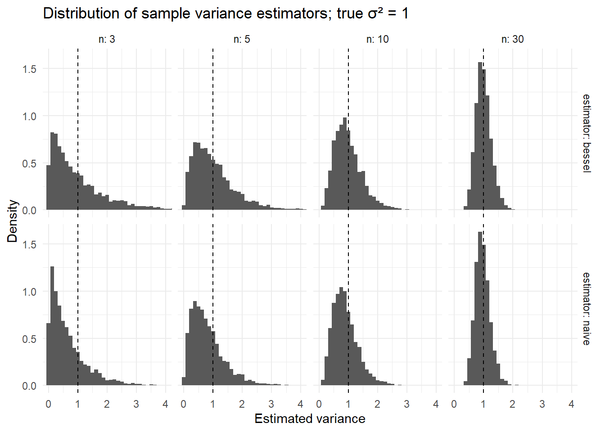

2 Welcome to Univariate Statistics
This module introduces you to descriptive statistics for a single variable. Please work your way through the notes. Most of the slides can be found in the [slides repo][slides].
2.1 Learning Goals
By the end of this module, you should be able to achieve all the learning goals outlined below.
- Describe the purpose of descriptive statistics.
- Calculate and interpret measures of central tendency.
- Calculate and interpret measures of variability.
- Understand the difference between population and sample statistics.
- Explain when to use different measures of central tendency and variability.
- Understand the role of outliers in descriptive statistics.
- Use R to calculate descriptive statistics and create visualizations for a single variable.
- Describe degrees of freedom and its role in statistics.
2.2 Degrees of Freedom and Bessel’s Correction
Every statistic borrows information from the data to estimate something about a population. When we spend information on estimating unknowns, we reduce how much “free” information remains to estimate variability or to test hypotheses. That remaining, usable information is what degrees of freedom count. In this chapter, we make that informal idea precise and show why a small tweak called Bessel’s correction fixes a systematic bias in sample variance.
Formally, the degrees of freedom of a statistic is the number of independent pieces of information that went into calculating the estimate.
Typically, when you see “degrees of freedom” in a research methods class, it is in the context of inferential statistics. However, degrees of freedom is a concept that comes up in many statistical contexts. And although our textbook skips over it, I think it is important to understand the concept of degrees of freedom in the context of descriptive statistics.
2.2.1 Why degrees of freedom exist
Imagine you have a sample of 5 scores: 2, 4, 6, 8, and 10. The mean of these scores is 6. Now, suppose I tell you that the first four scores are 2, 4, 6, and 8. Can you figure out what the fifth score is? Yes! It must be 10 because the mean is 6.
In this example, once you know the mean and the first four scores, the fifth score is no longer free to vary. It is completely determined by the other four scores and the mean. In other words, only four of the five scores are free to vary. We say that this sample has 4 degrees of freedom.
More formally, suppose you have n observations x1,…,xn and you compute the sample mean . If I hand you the first n−1 values and also tell you the sample mean, the last value is no longer free to vary: it is determined by the mean constraint:
sum(xi) = n *
The sample mean imposes one linear constraint, so exactly one degree of freedom is used up. What remains is n−1 pieces of independent wiggle left for measuring dispersion about that mean.
General principle:
degrees of freedom = number of observed data points − number of independent constraints estimated from those data.
Constraints typically arise from parameters we estimate from the same sample (a mean, a slope, group means, etc.), or from structural conditions (e.g., probabilities summing to 1).
2.2.2 Bessel’s correction
When we estimate the population variance from a sample, we use the sample mean as an estimate of the population mean. However, using the sample mean introduces a bias in our estimate of the population variance. This bias occurs because the sample mean is calculated from the same data used to calculate the variance, which reduces the variability in the data.
Formmally, the problem shows up when we try to estimate the population variance σ² from a sample.
Population variance is
σ² = E[(X − μ)²].
We try to estimate it from a sample by replacing the unknown μ with the sample mean x̄. The naive plug-in estimator
s²_naive = (1/n) ∑(xi − x̄)²
is biased downward: on average it underestimates σ². Intuitively, x̄ sits closer to the xi than μ does (it is chosen to minimize squared deviations), so the average squared residual around x̄ is too small.
Bessel’s correction fixes this bias by replacing n with n−1 in the denominator:
s² = (1/(n−1)) ∑(xi − x̄)².
This small change makes a big difference: s² is an unbiased estimator of σ². The intuition is that using x̄ as an estimate of μ uses up one degree of freedom, leaving only n−1 independent pieces of information to estimate variability. E[s²] = σ².
2.2.3 A quick simulation
To see Bessel’s correction in action, we can run a quick simulation. We’ll generate a population of data, take multiple samples from it, and compare the naive variance estimator with Bessel’s corrected estimator.
set.seed(1)
library(dplyr)
library(ggplot2)
sim_var <- function(n, reps = 10000) {
# Draw from a distribution with known σ²; standard normal has σ² = 1
naive <- numeric(reps)
bessl <- numeric(reps)
for (r in 1:reps) {
x <- rnorm(n, mean = 0, sd = 1)
m <- mean(x)
naive[r] <- mean((x - m)^2) # divide by n
bessl[r] <- sum((x - m)^2)/(n - 1) # divide by n-1
}
tibble(n = n, naive = mean(naive), bessel = mean(bessl))
}
out <- bind_rows(sim_var(3), sim_var(5), sim_var(10), sim_var(30), sim_var(100))
out
#> # A tibble: 5 × 3
#> n naive bessel
#> <dbl> <dbl> <dbl>
#> 1 3 0.666 1.000
#> 2 5 0.804 1.01
#> 3 10 0.906 1.01
#> 4 30 0.965 0.998
#> 5 100 0.992 1.00You should see that the column bessel is very close to 1 across n, whereas naive is consistently below 1, with the discrepancy largest at small n.
A visualization:
grid <- expand.grid(n = c(3, 5, 10, 30), reps = 1:4000)
res <- grid %>%
group_by(n) %>%
do({
x <- rnorm(.$n[1]*4000)
mat <- matrix(x, nrow = 4000, byrow = TRUE)
m <- rowMeans(mat)
naive <- rowMeans((mat - m)^2)
bessel <- rowSums((mat - m)^2)/(.$n[1]-1)
tibble(naive = naive, bessel = bessel)
}) %>% ungroup()
res_long <- res %>%
mutate(n = rep(c(3,5,10,30), each = 4000)) %>%
tidyr::pivot_longer(cols = c("naive","bessel"), names_to = "estimator", values_to = "value")
ggplot(res_long, aes(x = value, y = after_stat(density))) +
geom_histogram(bins = 60) +
geom_vline(xintercept = 1, linetype = "dashed") +
# trim x axis for better visualization
coord_cartesian(xlim = c(0, 4)) +
facet_grid(estimator ~ n, labeller = label_both) +
labs(title = "Distribution of sample variance estimators; true σ² = 1",
x = "Estimated variance", y = "Density") +
theme_minimal()
Interpretation: Histograms for the naive estimator center below 1; Bessel-corrected ones center near 1.